Colonnes : Sombre, Clair, Verre. Noir OFF remplacé par une faible lumière de présentation ; aucun luminaire commandé en OFF.
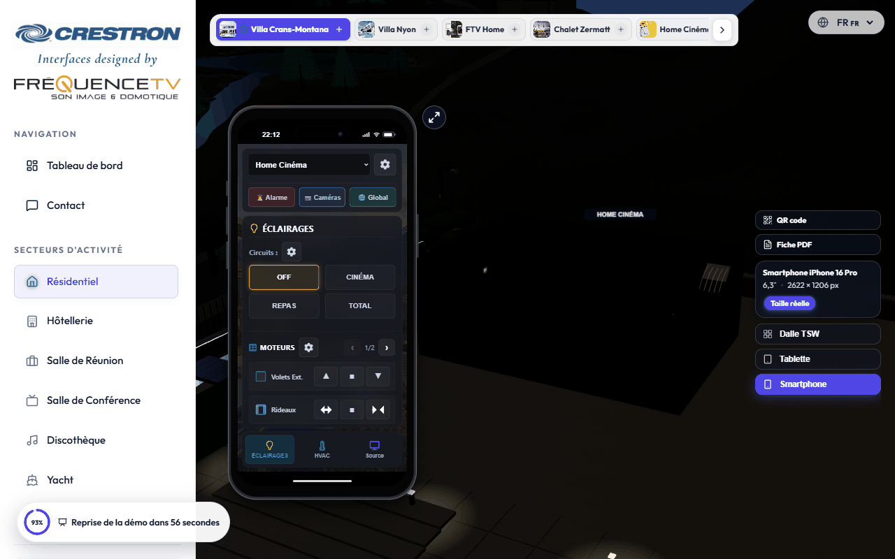
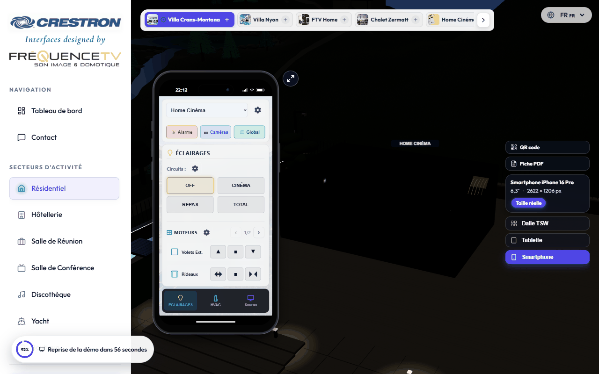
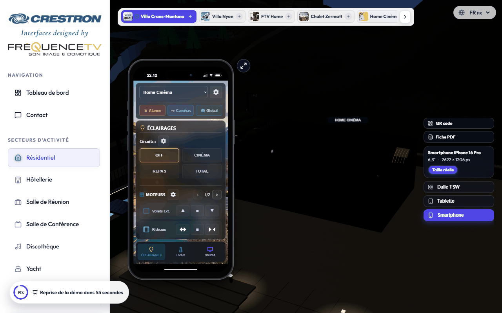
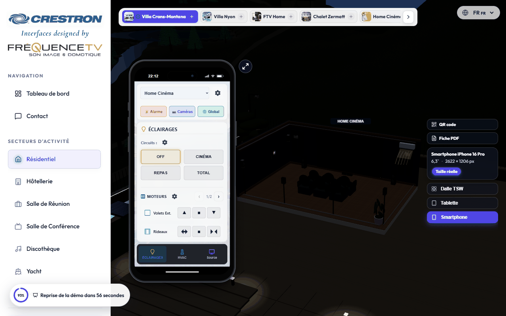
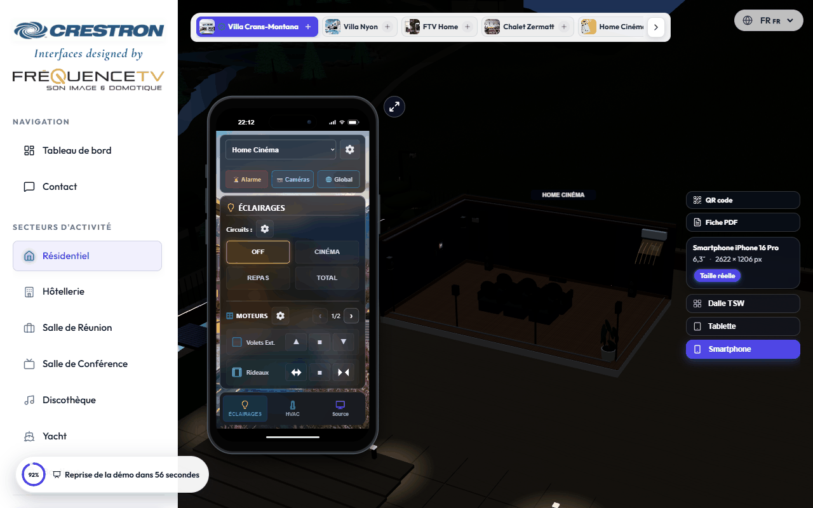
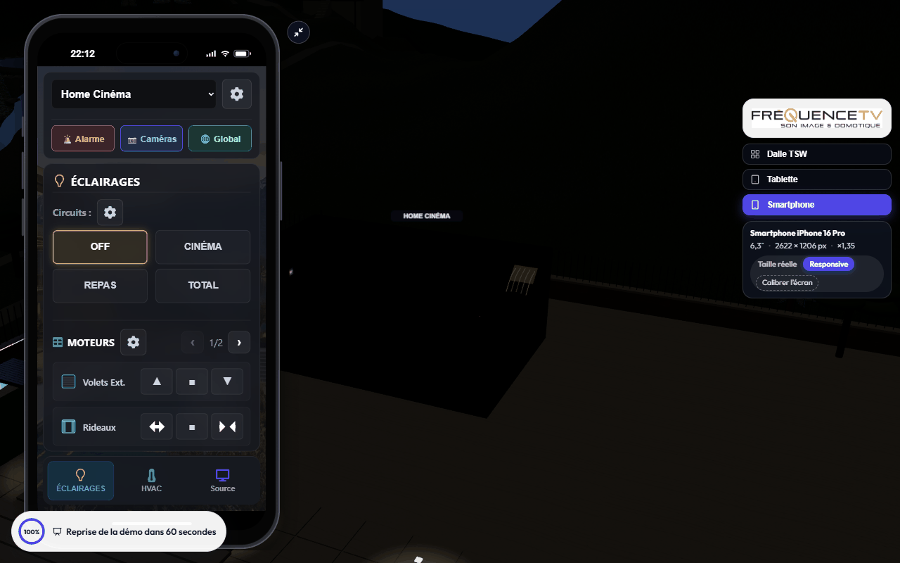
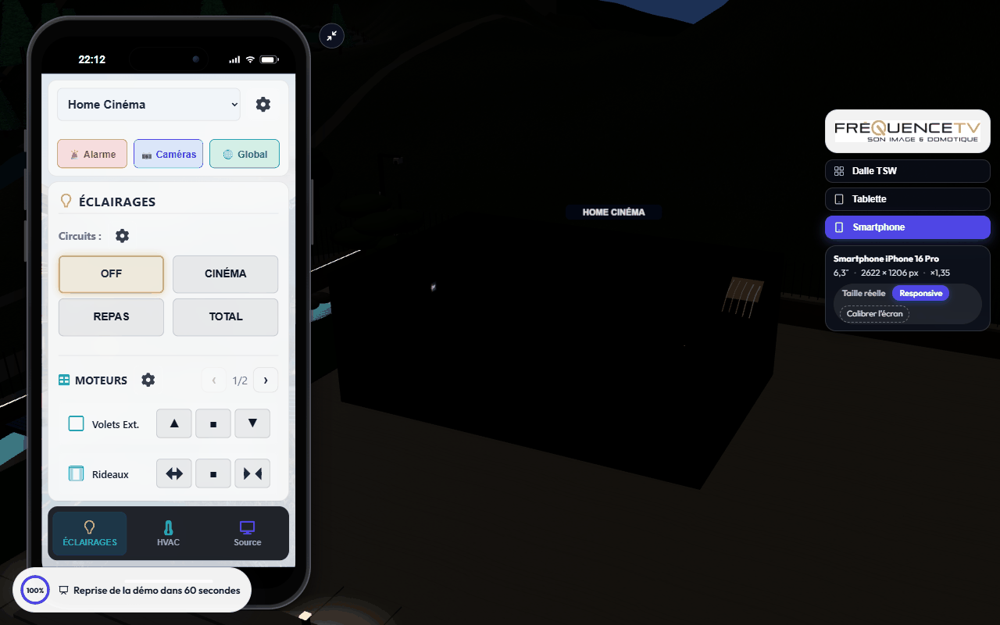
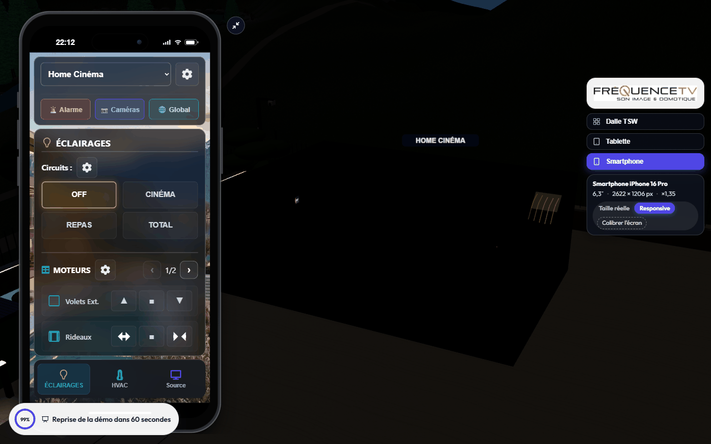
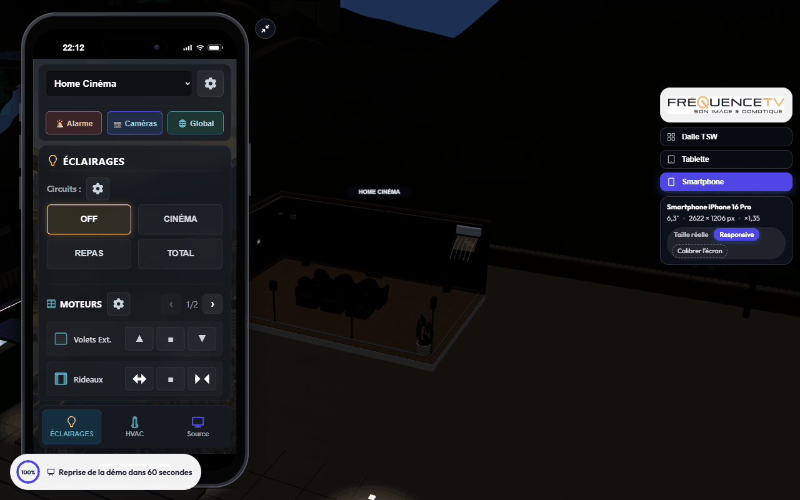
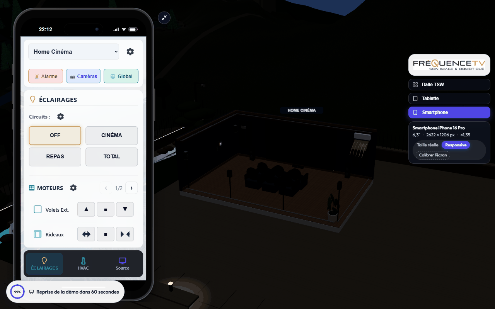
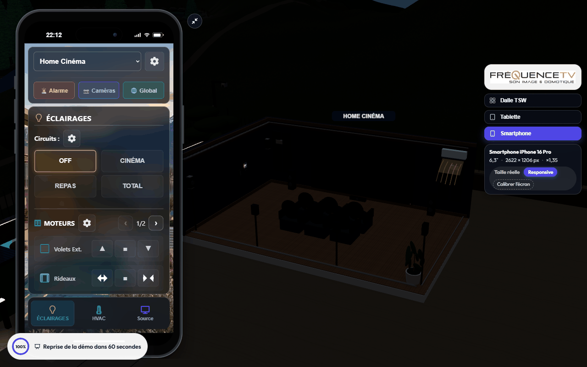
Thèmes clair et sombre existants ; verre dépoli non disponible dans ce simulateur.
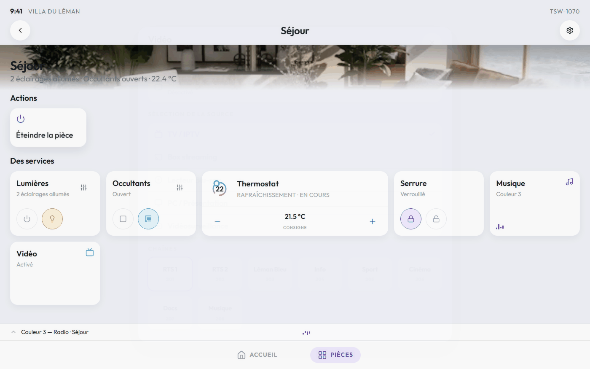
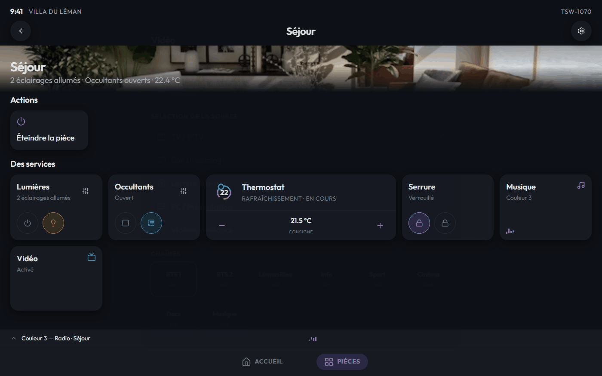
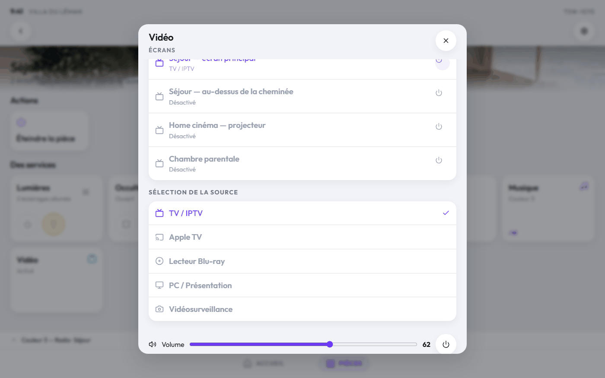
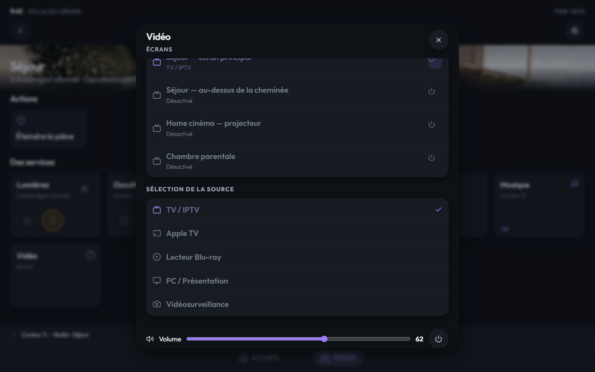